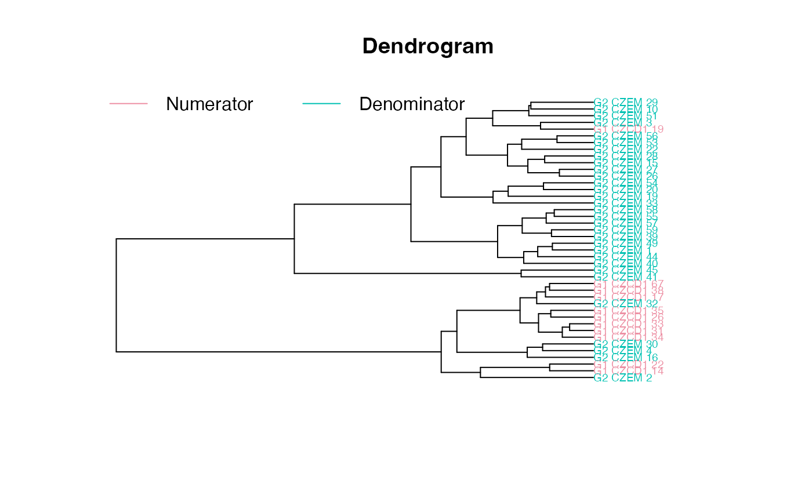
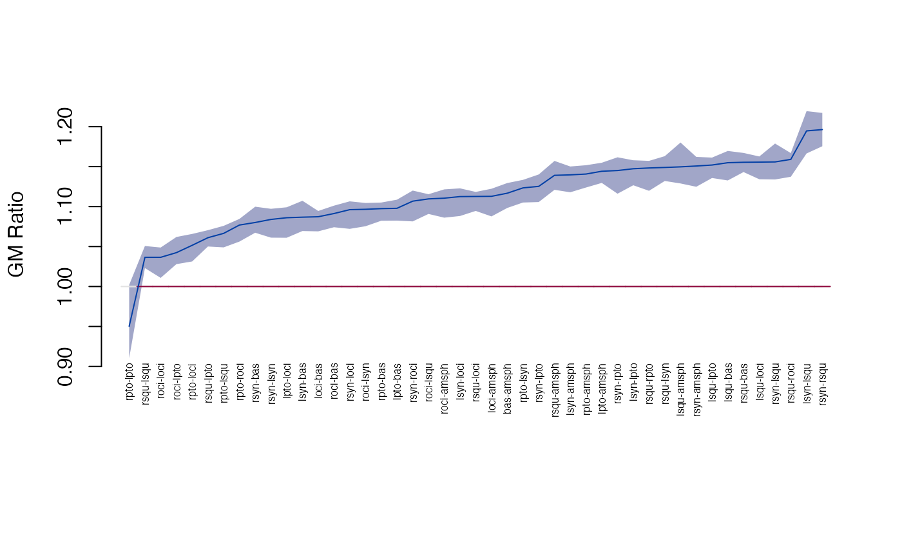
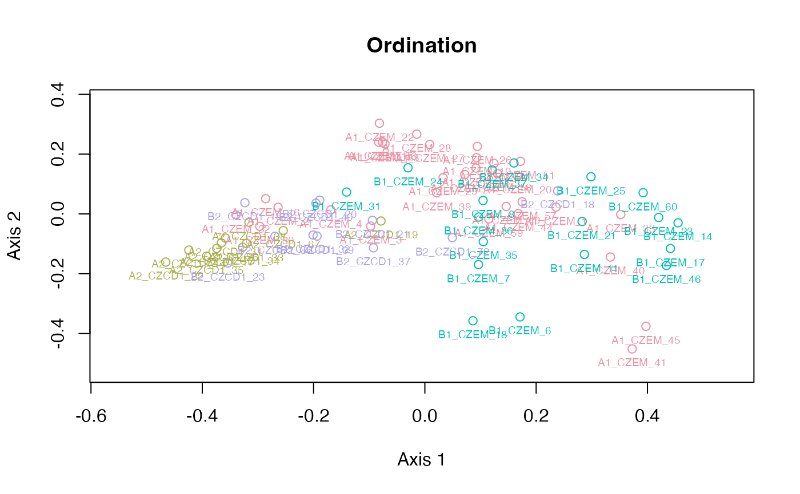

Growth difference
edma_gdm.RdGrowth matrix and growth difference matrix based inference based on Lele and Richtsmeier (1992, 1995).
edma_gm(a1, a2, ...) get_gm(object, ...) # S3 method for edma_gm get_gm(object, sort=FALSE, level = 0.95, ...) edma_gdm(a1, a2, b1, b2, ...) get_gdm(object, ...) # S3 method for edma_gdm get_gdm(object, sort=FALSE, level = 0.95, ...) # S3 method for edma_gm print(x, ...) # S3 method for edma_gdm print(x, ...) # S3 method for edma_gm T_test(object, ...) # S3 method for edma_gdm T_test(object, ...) # S3 method for edma_gdm landmarks(x, ...) # S3 method for edma_gdm dimensions(x, ...) # S3 method for edma_gdm plot_ord(x, ...) # S3 method for edma_gdm plot_clust(x, ...)
Arguments
| a1, a2, b1, b2 | EDMA fit object to compare growths. |
|---|---|
| x, object | an EDMA GM or GDM objects. |
| sort | logical, if stacked distances are to be sorted, see Examples. |
| level | numeric, between 0 and 1, alpha level for confidence interval. |
| ... | other arguments passed to |
Details
Growth matrix (GM) is calculated as the ratio of form matrices (FM) from the numerator and denominator objects following Lele and Richtsmeier (1992, 1995): GM(A1,A2) = FM(A2)/FM(A1). Form matrices are formed as pairwise Euclidean distances between landmarks from EDMA fit objects using the estimated mean forms.
Growth difference matrix (GDM) is calculated as GDM(A1,A2,B1,B2) = GM(B1,B2) / GM(A1,A2).
Inference and visualization is similar to how it is done for FDMs.
Value
edma_gm compares two EDMA fit objects and calculates GM.
edma_gdm compares 4 EDMA fit objects and calculates GDM.
The plot_ord and plot_clust
produce plots based on dissimilarities among specimens
in the 2 or 4 objects (for GM and GDM, respectively).
References
Lele, S. R., and Richtsmeier, J. T., 1992. On comparing biological shapes: detection of influential landmarks. American Journal of Physical Anthropology 87:49--65. <doi:10.1002/ajpa.1330870106>
Lele, S. R., and Richtsmeier, J. T., 1995. Euclidean distance matrix analysis: confidence intervals for form and growth differences. American Journal of Physical Anthropology 98:73--86. <doi:10.1002/ajpa.1330980107>
See also
Examples
file_a1 <- system.file("extdata/purplebook/cebusage1.xyz", package="EDMAinR") a1 <- read_xyz(file_a1) file_a2 <- system.file("extdata/purplebook/cebusage6.xyz", package="EDMAinR") a2 <- read_xyz(file_a2) a1#> EDMA data: Cebus apella - age 1, 6 landmarks, 3 dim... #> 3 dimensions, 6 landmarks, 8 specimensa2#> EDMA data: Cebus apella females -- age 6, 6 landmar... #> 3 dimensions, 6 landmarks, 36 specimensfit_a1 <- edma_fit(a1, B=10) fit_a2 <- edma_fit(a2) ## --- growth matrix --- gm <- edma_gm(a1=fit_a1, a2=fit_a2, B=10) gm#> EDMA growth matrix #> Call: edma_gm(a1 = fit_a1, a2 = fit_a2, B = 10) #> 10 bootstrap runs (ref: denominator) #> T=1.2036, p=0T_test(gm)#> #> Bootstrap based EDMA T-test #> #> data: growth matrix #> T-value = 1.2036, B = 10, p-value < 2.2e-16 #>#> 2.5% 97.5% #> 1 0.9484827 1.267111 #> 2 0.9602479 1.189080 #> 3 0.9616585 1.186898 #> 4 0.9692895 1.170315 #> 5 0.9604141 1.150196 #> 6 0.9671174 1.199384#> row col dist lower upper #> 1 L2 L1 1.344976 0.9484827 1.267111 #> 2 L3 L1 1.236018 0.9602479 1.189080 #> 3 L4 L1 1.236158 0.9616585 1.186898 #> 4 L5 L1 1.220912 0.9692895 1.170315 #> 5 L6 L1 1.190613 0.9604141 1.150196 #> 6 L3 L2 1.253479 0.9671174 1.199384#> row col dist lower upper #> 10 L4 L3 1.433060 0.9613419 1.329967 #> 7 L4 L2 1.386709 0.9676535 1.296256 #> 1 L2 L1 1.344976 0.9484827 1.267111 #> 8 L5 L2 1.326115 0.9691751 1.248116 #> 11 L5 L3 1.318959 0.9707480 1.242925 #> 9 L6 L2 1.312207 0.9627696 1.239265#> row col dist lower upper #> 5 L6 L1 1.190613 0.9604141 1.150196 #> 15 L6 L5 1.208496 0.9706878 1.164778 #> 4 L5 L1 1.220912 0.9692895 1.170315 #> 2 L3 L1 1.236018 0.9602479 1.189080 #> 3 L4 L1 1.236158 0.9616585 1.186898 #> 14 L6 L4 1.252233 0.9733420 1.198987plot_ord(gm)plot_clust(gm)plot_Ttest(gm)plot_ci(gm)plot_2d(gm)if (interactive()) plot_3d(gm) ## --- growth difference matrix --- gdm <- edma_gdm(a1=fit_a1, a2=fit_a2, b1=fit_a1, b2=fit_a2, B=10) gdm#> EDMA growth difference matrix #> Call: edma_gdm(a1 = fit_a1, a2 = fit_a2, b1 = fit_a1, b2 = fit_a2, #> B = 10) #> 100 bootstrap runs (ref: denominator) #> T=1, p=1T_test(gdm)#> #> Bootstrap based EDMA T-test #> #> data: growth difference matrix #> T-value = 1, B = 100, p-value = 1 #>#> 2.5% 97.5% #> 1 0.9469631 1.012422 #> 2 0.9248929 1.019951 #> 3 0.9271595 1.133859 #> 4 0.9498827 1.063975 #> 5 0.9380324 1.062166 #> 6 0.9290253 1.088689#> row col dist lower upper #> 1 L2 L1 1 0.9469631 1.012422 #> 2 L3 L1 1 0.9248929 1.019951 #> 3 L4 L1 1 0.9271595 1.133859 #> 4 L5 L1 1 0.9498827 1.063975 #> 5 L6 L1 1 0.9380324 1.062166 #> 6 L3 L2 1 0.9290253 1.088689#> row col dist lower upper #> 1 L2 L1 1 0.9469631 1.012422 #> 2 L3 L1 1 0.9248929 1.019951 #> 3 L4 L1 1 0.9271595 1.133859 #> 4 L5 L1 1 0.9498827 1.063975 #> 5 L6 L1 1 0.9380324 1.062166 #> 6 L3 L2 1 0.9290253 1.088689#> row col dist lower upper #> 1 L2 L1 1 0.9469631 1.012422 #> 2 L3 L1 1 0.9248929 1.019951 #> 3 L4 L1 1 0.9271595 1.133859 #> 4 L5 L1 1 0.9498827 1.063975 #> 5 L6 L1 1 0.9380324 1.062166 #> 6 L3 L2 1 0.9290253 1.088689plot_ord(gdm)plot_clust(gdm)plot_Ttest(gdm)plot_ci(gdm)#plot_2d(gdm) # need real data #if (interactive()) # plot_3d(gdm)